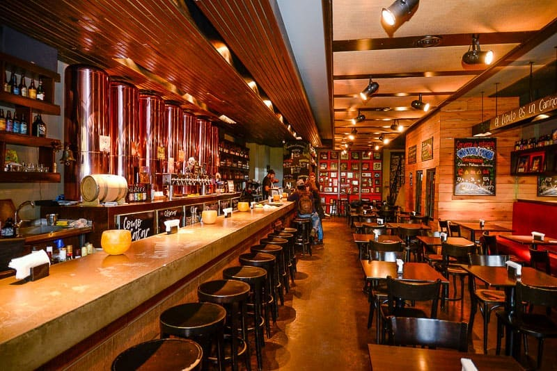

VISITANOS EN NUESTRA SUCURSAL
Tres amigos que durante años elaboraban cerveza en el garaje de su casa para divertirse y disfrutar con su familia, deciden dar el salto al vacío y probar suerte. Así fue que Mariana, Leo y Pablo instalaron una pequeña fábrica de cerveza artesanal dentro de un local que llamaron Bejas. Bejas se convirtió en un éxito inmediatamente; el ambiente informal y amigable, buena música, ricos platos y la mejor cerveza artesanal.